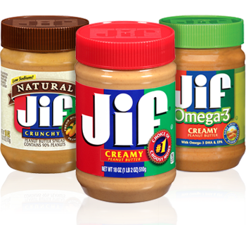
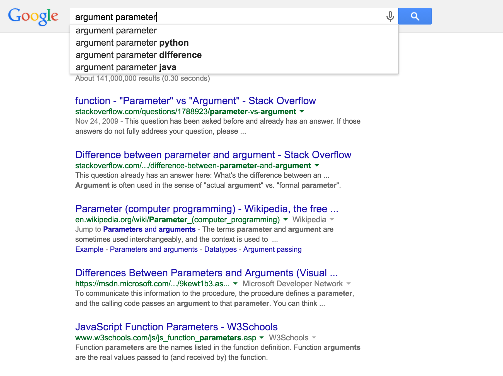
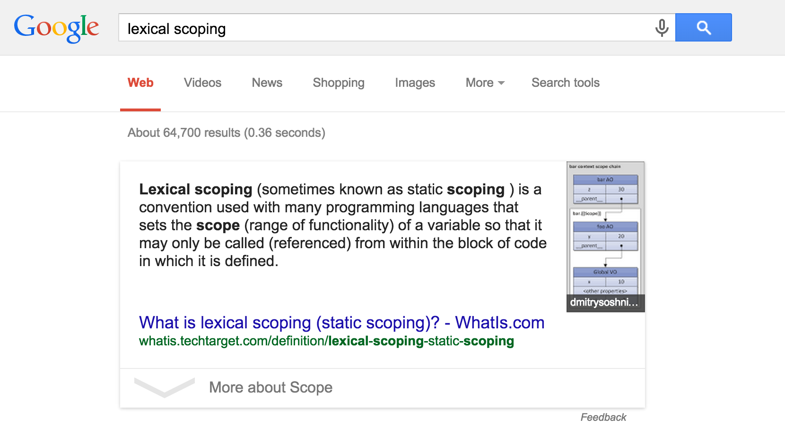

I think I know
what you're talking about
...but I'm not sure.
A talk about words by Jennifer Wong
jennz0r / @mybluewristband
I'm Jenn
I'm a self-taught Front End Developer.
Software Engineer
(Human) Wasteland
aka The Poop Map
Developers Developers

Disclaimers
Animated GIFs
Errors
You might be like
But before you're like...
Let's talk about it!
After these messages...
Allons-y!
Developer
Software Engineer
Programmer
Code Monkey
Some days
When I look at my computer...
Sometimes
When I'm in conversation with other devs...
There are only two hard things in Computer Science: cache invalidation and naming things.- Phil Karlton
Parameter vs. Argument
What's the difference? Is there one?
Parameter vs. Argument
Parameter vs. Argument
let shark = (side) => {
if (side == "left") {
sillyDance();
console.log("LOLOL");
} else {
normalDance();
}
};
shark("left");
parameter (n.)
A geometry term until 1920s when it yielded sense of "measurable factor which helps to define a particular system" (1927).
Argument (n.)
early 14c., "statements and reasoning in support of a proposition," from Old French arguement "reasoning, opinion; accusation, charge" (13c.)
Computer Programming
The term parameter (sometimes called formal parameter) is often used to refer to the variable as found in the function definition, while argument (sometimes called actual parameter) refers to the actual input passed.
- Wikipedia on Parameters in Computer Programming
Mathematical Functions
A function definition can also contain parameters, but unlike variables, parameters are not listed among the arguments that the function takes.
Please, go on...
The variable x designates the function's argument, but a, b, and c are parameters
f(x) = ax^2 + bx + c
Wait a second...
f(x) = ax^2
var foo = function (bar) {
console.log("What?");
};
Takeaway
Parameters help define a function.
Arguments are passed into a function.
Parameter vs. Argument
// Here's the parameter!
let shark = (side) => {
if (side == "left") {
sillyDance();
console.log("LOLOL");
} else {
normalDance();
}
};
// Here's the argument!
shark("left");
The terms parameter and argument are sometimes used interchangeably.
Scope
Lexical Scoping
Huh?
Lexical Scoping
Lexical scoping <=> Static scoping
Scope <=> Range of functionality
Called <=> Referenced
They use "scope" in the definition of lexical scope!
Break it down.
Scope (n.1)
"extent," 1530s, "room to act," from Italian scopo "aim, purpose, object, thing aimed at, mark, target," from Latin scopus...
Scope
A scope is a part of a program that is or can be the scope for a set of bindings – a precise definition is tricky (see below), but in casual use and in practice largely corresponds to a block, a function, or a file, depending on language and type of entity.
- Wikipedia on Scope (computer science)
Scope
In computer programming, the scope of a name binding – an association of a name to an entity, such as a variable – is the part of a computer program where the binding is valid: where the name can be used to refer to the entity.
- Wikipedia on Scope (computer science)
Scope Again!
The strict definition of the (lexical) "scope" of a name (identifier) is unambiguous – it is "the portion of source code in which a binding of a name with an entity applies" – and is virtually unchanged from its 1960 definition in the specification of ALGOL 60.
- Wikipedia on Scope (computer science)
ALGOL 60
Short for ALGOrithmic Language 1960
ALGOL 60 was the first language implementing nested function definitions with lexical scope.
1960!
Lexical vs. Dynamic
Lexical scope is the main focus of this article, with dynamic scope understood by contrast with lexical scope.
- Wikipedia on Scope (computer science)
Lexical (adj.)
1833, from Greek lexikos "pertaining to words" (see lexicon) + -al (1). Related: Lexically.
Dynamic (adj.)
1817 as a term in philosophy; 1827 in the sense "pertaining to force producing motion" (the opposite of static)Lexical vs. Dynamic
... for most programming languages, "part of a program" refers to "portion of the source code (area of text)", and is known as lexical scope. In some languages, however, "part of a program" refers to "portion of run time (time period during execution)", and is known as dynamic scope.
Both of these terms are somewhat misleading – they misuse technical terms, as discussed in the definition – but the distinction itself is accurate and precise, and these are the standard respective terms.
- Wikipedia on Scope (computer science)
Lexical vs. Dynamic
In practice, with lexical scope a variable's definition is resolved by searching its containing block or function, then if that fails searching the outer containing block, and so on, whereas with dynamic scope the calling function is searched, then the function which called that calling function, and so on.
- Wikipedia on Scope (computer science)
Lexical vs. Dynamic
All that being said, dynamic scope is typically used less often than lexical scope.
Lexical Scope
Recursion
Recursion (n.)
1610s, from Latin recursionem (nominative recursio) "a running backward, return," noun of action from past participle stem of recurrere "run back".
Recursion
The most common application of recursion is in mathematics and computer science, in which it refers to a method of defining functions in which the function being defined is applied within its own definition.
Recursion
Specifically, this defines an infinite number of instances (function values), using a finite expression that for some instances may refer to other instances, but in such a way that no loop or infinite chain of references can occur.
Recursion
In mathematics and computer science, a class of objects or methods exhibit recursive behavior when they can be defined by two properties:
1. A simple base case (or cases)—a terminating scenario that does not use recursion to produce an answer
2. A set of rules that reduce all other cases toward the base case
Recursion
A function that calls itself.
Fibonacci Sequence
let fibonacci = (n) => {
return n < 2 ? n : fibonacci(n - 1) + fibonacci(n - 2);
};
Factorials!
5! = 5 * 4 * 3 * 2 * 1
let factorial = (n) => {
if (n <= 1) {
return 1;
} else {
return n * factorial(n-1);
}
};
Concatenation (n.)
c. 1600, from Late Latin concatenationem (nominative concatenatio) "a linking together," noun of action from past participle stem of concatenare "to link together," from com- "together" (see com-) + catenare, from catena "a chain" (see chain (n.)).
This is my cat!
console.log("Todo es mejor con " + "cat" + "!");Recursive Cat!
Instantiate
Instantiate(v.)
1946, from instant (Latin instantia) + -ate. Related: Instantiated; instantiation.
this WHAT???
Philosophy
In predicate logic Universal Instantiation (UI, also called universal specification or universal elimination, and sometimes confused with Dictum de omni) is a valid rule of inference from a truth about each member of a class of individuals to the truth about a particular individual of that class.
- Wikipedia on Universal Instantiation
Basically:
All cats are mammals.
Fry is a cat.
Therefore, Fry is a mammal.
Instantiate
class Mammal {
constructor() {
this.neocortex = true;
}
}
class Cat extends Mammal {
constructor(name, years) {
super();
this.name = name;
this.years = years;
}
}
let fryCat = new Cat('Fry', 7);
Cool!
Weirdly
Online Etymology Dictionary
Instantiation redirects to Instantiate
Wikipedia
Instantiate redirects to Instantiation
Acronyms
CRM CMS CDN
Customer Relationship Manager
like Salesforce!
Content Management System
like Wordpress!
Content Delivery Network
like Amazon CloudFront!
SaaS vs. Sass
Please clarify when you're talking about these.
Software as a Service (like Salesforce)
Syntactically awesome stylesheets (CSS extension language)
DOM
DOM
DOM

The Dom is a mountain of the Pennine Alps, located between Randa and Saas-Fee in the canton of Valais.
DOM
Document Object Model
The Document Object Model (DOM) is a cross-platform and language-independent convention for representing and interacting with objects in HTML, XHTML, and XML documents.
Document Object Model
The Document Object Model (DOM) is a programming interface for HTML, XML and SVG documents. It provides a structured representation of the document (a tree) and it defines a way that the structure can be accessed from programs so that they can change the document structure, style and content.
- Mozilla Developer Network on DOM
GUI & CLI
Ooey Gooey Butter Cake
Geoduck
CLI
GUI > CLI
Graphical User Interface (GUIs) were introduced in reaction to the perceived steep learning curve of Command-Line Interfaces (CLIs), which require commands to be typed on the keyboard.
AJAX
Who even uses XML? (JSON!)
jQuery AJAX method option
async: false
SJAJ
Don't be like...
Please be more like...
It's difficult!
Thank you
jennz0r.github.io/think-know-not-sure
A talk about words by Jennifer Wong
jennz0r / @mybluewristband